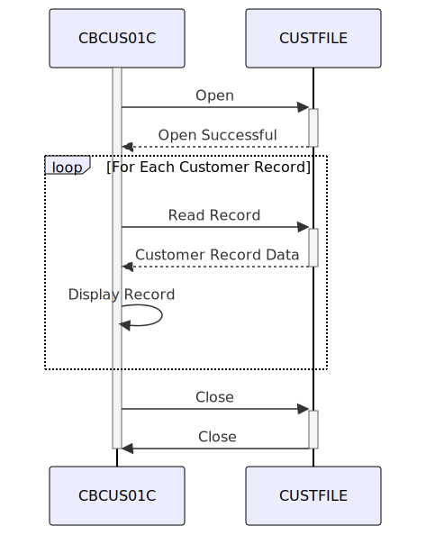

Gerado em: 1 de outubro de 2024
CardDemo Customer Data Extract
Descrição Resumida:
Este programa em lote lê dados de clientes de um arquivo chamado CUSTFILE e exibe as informações na tela. É como folhear um arquivo, abrindo a pasta de cada cliente e mostrando as informações para o usuário.
Histórias de Usuário:
Como analista de dados, preciso visualizar os dados do cliente para analisá-los e gerar relatórios.
Épico Relacionado:
8 - Gestão de Dados do Cliente
Requisitos Funcionais:
- Abrir Arquivo de Dados do Cliente: O programa deve abrir o arquivo
CUSTFILE.
- Ler Registros do Cliente: O programa deve ler os registros do cliente sequencialmente do arquivo
CUSTFILE.
- Exibir Dados do Cliente: O programa deve exibir o conteúdo de cada registro do cliente na tela.
- Tratar Fim de Arquivo: O programa deve tratar o final do arquivo
CUSTFILE normalmente.
- Fechar Arquivo de Dados do Cliente: O programa deve fechar o arquivo
CUSTFILE.
- Tratamento de Erros: O programa deve incluir tratamento de erros para operações de arquivo, como:
- Erros de abertura de arquivo
- Erros de leitura de arquivo
- Erros de fechamento de arquivo.
Requisitos Não Funcionais:
- Desempenho: O programa deve processar os dados do cliente com eficiência.
- Confiabilidade: O programa deve ser confiável e tratar erros normalmente.
- Manutenibilidade: O programa deve ser bem documentado e fácil de entender para manutenção futura.
- Segurança: O acesso ao
CUSTFILE e a exibição de dados confidenciais do cliente devem ser restritos e auditados para manter a segurança e a privacidade dos dados.
Critérios de Aceitação:
- O programa abre o arquivo
CUSTFILE com sucesso.
- O programa lê e exibe todos os registros de clientes do arquivo.
- O programa trata o final do arquivo normalmente.
- O programa fecha o arquivo
CUSTFILE.
- O programa trata erros de operação de arquivo e exibe mensagens apropriadas.
Melhorias de Código:
- Melhorar Tratamento de Erros: Implemente um tratamento de erros mais específico para diferentes erros de operação de arquivo. Isso pode envolver a verificação de códigos de status de arquivo específicos e a exibição de mensagens de erro mais informativas para o usuário.
- Aprimorar Documentação: Adicione mais comentários ao código para explicar o propósito de diferentes seções e funções. Isso tornará o código mais fácil de entender para manutenção futura.
- Considerar Log: Implemente um mecanismo de log para registrar detalhes de execução do programa, incluindo quaisquer erros encontrados. Isso pode ser útil para depurar e monitorar o comportamento do programa.
Melhorias de Segurança:
- Permissões de Arquivo: Certifique-se de que o
CUSTFILE tenha permissões de arquivo apropriadas para restringir o acesso não autorizado.
- Criptografia de Dados: Considere criptografar os dados confidenciais do cliente dentro do
CUSTFILE para protegê-los de acesso não autorizado.
- Auditoria: Implemente um rastro de auditoria para rastrear quem acessa e modifica o
CUSTFILE.
Diagrama Conceitual:

–Made by “Smart Engineering” (by Compass.UOL)–